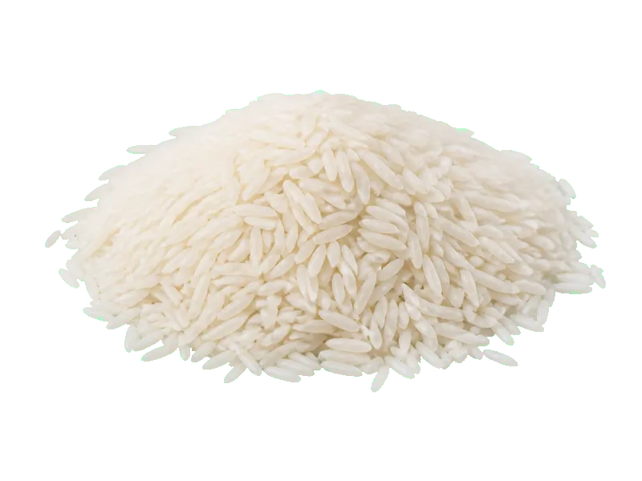

Zboża i kasze
Ryż biały
Ryż biały: 6.7 g białka, 344 kcal, 79 g węglowodanów i 0.7 g tłuszczu na 100 g. Kategoria: Zboża i kasze.
Kalorie344 kcalna 100 g
Białko / proteiny6.7 g
Węglowodany79 g
Tłuszcz0.7 g
Cena (szac.)~0,80 złza 100 g
Ceny zaktualizowano: maj 2026 (szacunek — ceny w popularnych supermarketach)
Porcja: woreczek (100g)
| Kalorie | 344 kcal |
|---|---|
| Białko | 6.7 g |
| Węglowodany | 79 g |
| Tłuszcz | 0.7 g |
| Cena (szac.) | ~0,80 zł |
Szczegółowe składniki odżywcze na 100 g
| Wartość energetyczna (kalorie) | 344 kcal |
|---|---|
| Białko (proteiny) | 6.7 g |
| Węglowodany | 79 g |
| Tłuszcz | 0.7 g |
| Tłuszcze nasycone | 0.2 g |
| Tłuszcze nienasycone | 0.5 g |
| Witaminy i minerały | Witaminy z gr. B, Magnez, Tiamina (B1) |
| Współczynnik kcal / 1 g białka | 51.3 |
| Cena produktu (szac. za 100 g) | ~0,80 zł |
| Cena za 100 g białka (szac.) | ~11,94 zł |